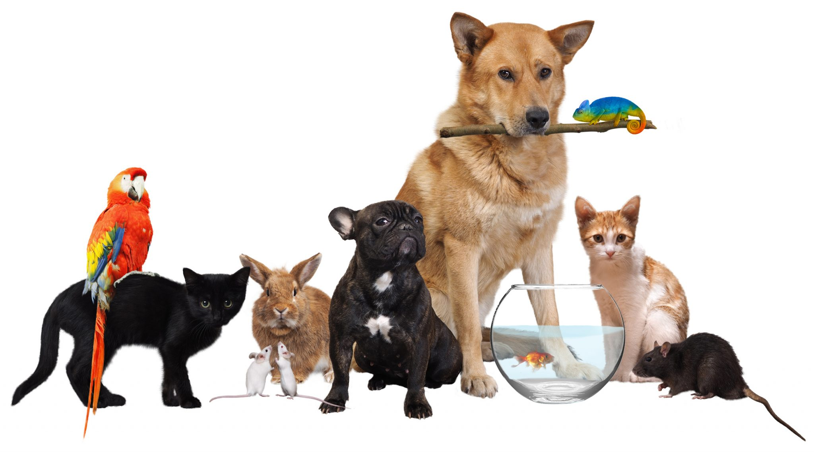

THE PET LOVER
We've found the best pet gear, health supplies, and accessories to keep your pet healthy and happy. From Pet collars to Pet Toys, to Pet Houses have spent hours on research to make recommendations for the furry members of your family.
Nothing can compare to the unconditional love you receive from a sweet pet. pets can decrease both blood pressure and anxiety, and perhaps even boost immunity.We love all pets & our vision is to educate the pet loving community/pet owners, through our content.